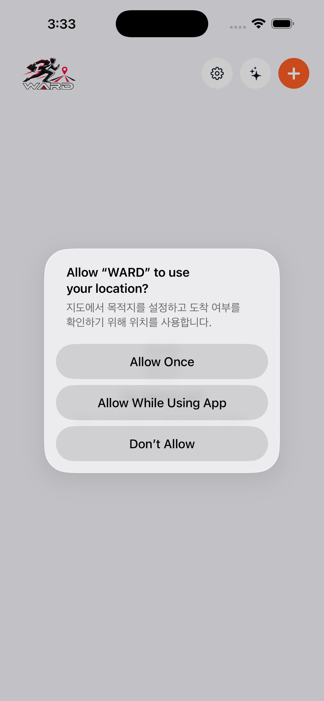
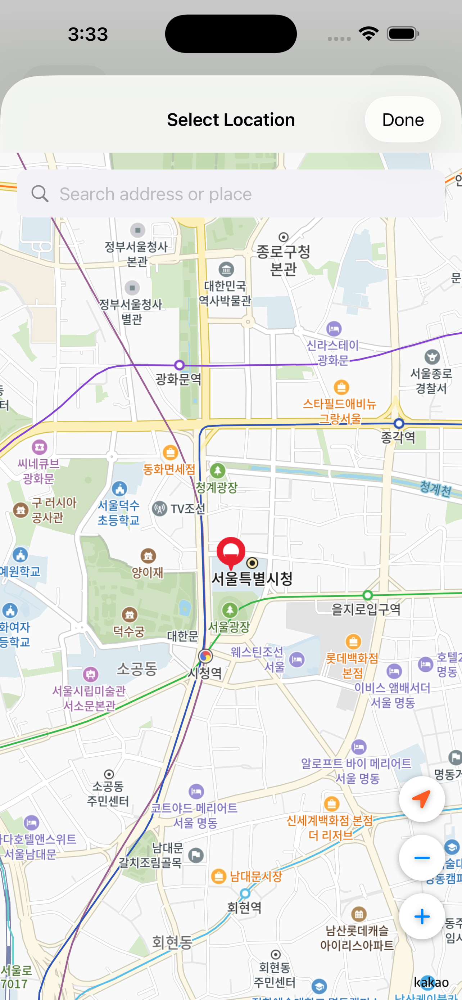
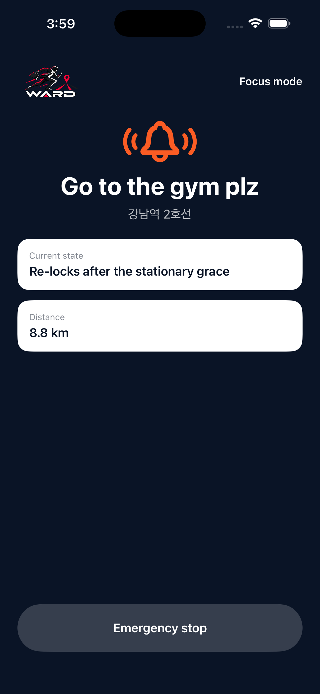

WARD
The alarm that rings until you actually arrive.
GPS arrival alarm that tells you when to leave — and doesn't stop until you get there.



How it works
- Set your destination and the time you need to arrive
- WARD calculates your travel time and tells you exactly when to leave
- The alarm rings until you physically arrive at your destination
Features
- Departure alerts based on real travel-time estimates
- Kakao Maps in Korea, Google Maps everywhere else
- Transit, driving, walking, and cycling modes
- Repeat schedules for building habits
- Custom alarm sounds and adjustable arrival radius
- English, Korean, and Chinese
Get WARD
Free to download. WARD Plus removes ads and raises limits.
(App Store listing in review — links update when live)